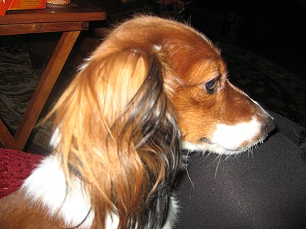

"Wiener-Dog" redirects here. For the film, see Wiener-Dog (film).
For other uses, see Dachshund (disambiguation).
The dachshund (UK: /ˈdækshʊnd, -ənd, -hʊnt/ DAKS-huund, -ənd, -huunt or US: /ˈdɑːkshʊnt, -hʊnd, -ənt/ DAHKS-huunt, -huund, -ənt;[1][2][3][4] German: "badger dog"), also known as the wiener dog, badger dog, doxie, and sausage dog, is a short-legged, long-bodied, hound-type dog breed. The dog may be smooth-haired, wire-haired, or long-haired. Coloration varies.
The dachshund was bred to scent, chase, and flush out badgers and other burrow-dwelling animals. The miniature dachshund was bred to hunt small animals such as rabbits.[5]
According to the American Kennel Club, the dachshund was ranked 9th in popularity among dog breeds in the United States in 2022.[6]
Etymology
The name dachshund is of German origin, and means "badger dog," from Dachs ("badger") and Hund ("hound, dog"). The German word is pronounced [ˈdaks.hʊnt] (listen). The pronunciation varies in English: variations of the first and second syllables include /ˈdɑːks-/, /ˈdæks-/ and /-hʊnt/, /-hʊnd/, /-ənd/. It may be incorrectly pronounced as /ˈdæʃ-/hound by some English speakers.[7][8] Although Dachshund is a German word, in modern German family dogs are more commonly known by the short name Dackel. Working dogs are, less commonly known as Teckel.[9]
Because of their long, narrow build, they are often nicknamed wiener or sausage dog.[10]
Classification
While classified in the hound group or scent hound group in the United States and Great Britain, the breed has its own group in the countries which belong to the Fédération Cynologique Internationale (World Canine Federation).[11] Many dachshunds, especially the wire-haired subtype, may exhibit behavior and appearance similar to the terrier group of dogs.[12] An argument can be made for the scent (or hound) group classification because the breed was developed to use scent to trail and hunt animals, and probably descended from the Saint Hubert Hound like many modern scent hound breeds such as bloodhounds and Basset Hounds; but with the persistent personality and love for digging that probably developed from the terrier, it can also be argued that they could belong in the terrier, or "earth dog", group.[12]
Characteristics
Appearance
A typical dachshund is long-bodied and muscular with short stubby legs. Its front paws are disproportionately large, being paddle-shaped and particularly suitable for digging. Its skin is loose enough not to tear while tunneling in tight burrows to chase prey. The dachshund has a deep chest which provides plenty of space for heart development and lung capacity. Its snout is long.[13]
Dapple dachshund with spotted coat
Coat and color
There are three dachshund coat varieties: smooth coat (short hair), long-haired, and wire-haired.[14] Longhaired dachshunds have a silky coat and short featherings on legs and ears. Wire-haired dachshunds are the least common coat variety in the United States (although it is the most common in Germany) and the most recent coat to appear in breeding standards.[14] Dachshunds have a wide variety of colors and patterns, the most common one being red. Their base coloration can be single-colored (either red or cream), tan pointed (black and tan, chocolate and tan, blue and tan, or isabella and tan), and in wire-haired dogs, a color referred to as wildboar. Patterns such as dapple (merle), sable, brindle and piebald also can occur on any of the base colors. Dachshunds in the same litter may be born in different coat colors depending on the genetic makeup of the parents.
A smooth dachshund
The dominant color in the breed is red, followed by black and tan. Tan pointed dogs have tan (or cream) markings over the eyes, ears, paws, and tail. The reds range from coppers to deep rusts, with or without somewhat common black hairs peppered along the back, face and ear edges, lending much character and an almost burnished appearance; this is referred to among breeders and enthusiasts as an "overlay" or "sabling". Sabling should not be confused with a more unusual coat color referred to as sable. At a distance, a sable dachshund looks somewhat like a black and tan dog. Upon closer examination, however, one can observe that along the top of the dog's body, each hair is actually banded with red at the base near the skin transitioning to mostly black along the length of the strand. An additional striking coat marking is the brindle pattern. "Brindle" refers to dark stripes over a solid background—usually red. If a dachshund is brindled on a dark coat and has tan points, it will have brindling on the tan points only. Even one single, lone stripe of brindle is a brindle. If a dachshund has one single spot of dapple, it is a dapple.
A standard long-haired dachshund
The Dachshund Club of America (DCA) and the American Kennel Club (AKC) consider Double Dapple to be out of standard and a disqualifying color in the show ring. Piebald is now a recognized color in the Dachshund Club of America (DCA) breed standard.
Dogs that are double-dappled have the merle pattern of a dapple, but with distinct white patches that occur when the dapple gene expresses itself twice in the same area of the coat. The DCA excluded the wording "double-dapple" from the standard in 2007 and now strictly uses the wording "dapple" as the double dapple gene is commonly responsible for blindness and deafness.
A black-and-tan miniature dachshund
Size
Dachshunds come in three sizes: standard, miniature,[14] and kaninchen (German for "rabbit"). Although the standard and miniature sizes are recognized almost universally, the rabbit size is not recognized by clubs in the United States and the United Kingdom. The rabbit size is recognized by the Fédération Cynologique Internationale (World Canine Federation) (FCI), which contain kennel clubs from 83 countries all over the world.[15] An increasingly common size for family pets falls between the miniature and the standard size; these are frequently referred to as "tweenies," which is not an official classification.
A wire-haired dachshund
A full-grown standard dachshund averages 7.5 kg (16 lb) to 14.5 kg (32 lb), while the miniature variety normally weighs less than 5.5 kg (12 lb).[14] The kaninchen weighs 3.5 kg (8 lb) to 5 kg (11 lb). According to kennel club standards, the miniature (and kaninchen, where recognized) differs from the full-size only by size and weight, thus offspring from miniature parents must never weigh more than the miniature standard to be considered a miniature as well.[14] While many kennel club size divisions use weight for classification, such as the American Kennel Club, other kennel club standards determine the difference between the miniature and standard by chest circumference; some kennel clubs, such as in Germany, even measure chest circumference in addition to height and weight.[16]
A redhaired miniature dachshund
H. L. Mencken said that "A dachshund is a half-dog high and a dog-and-a-half long,"[17] although they have been referred to as "two dogs long".[18] This characteristic has led them to be quite a recognizable breed, and they are featured in many jokes and cartoons, particularly The Far Side by Gary Larson.[19]
Eye color
Light-colored dachshunds can sport amber, light brown, or green eyes; however, kennel club standards state that the darker the eye color, the better. Dapple and double dapple dachshunds can have multi-coloured "wall" eyes with fully blue, partially blue or patched irises due to the effect of the dapple gene on eye pigmentation expression.[20] "Wall" eye is permissible according to DCA standards but undesirable by AKC standards. Piebald-patterned dachshunds will never have blue in their eyes, unless the dapple pattern is present.
A black and tan miniature dachshund with brindle markings
Temperament
Dachshunds are playful, but as hunting dogs can be quite stubborn,[21] and are known for their propensity for chasing small animals, birds, and tennis balls with great determination and ferocity.[22][23][24] As dachshunds were originally used as badger hunters they have a keen sense for chasing smaller animals. Dachshunds are often stubborn, making them a challenge to train.[25][26][27][28]
A golden haired dachshund
Being the owner of dachshunds, to me a book on dog discipline becomes a volume of inspired humor. Every sentence is a riot. Some day, if I ever get a chance, I shall write a book, or warning, on the character and temperament of the dachshund and why he can't be trained and shouldn't be. I would rather train a striped zebra to balance an Indian club than induce a dachshund to heed my slightest command. When I address Fred I never have to raise either my voice or my hopes. He even disobeys me when I instruct him in something he wants to do.
— E. B. White[29][30]
Dachshunds can be aggressive to strangers and other dogs.[31] Despite this, they are rated in the intelligence of dogs as an average working dog with a persistent ability to follow trained commands 50% of the time or more.[32] They rank 49th in Stanley Coren's Intelligence of Dogs, being of average working and obedience intelligence. They can have a loud bark. Some bark quite a lot and may need training to stop, while others will not bark much at all.[23][24] Dachshunds are known for their devotion and loyalty to their owners,[24][33] though they can be standoffish toward strangers.[22] If left alone too frequently, some dachshunds are prone to separation anxiety and may chew objects in the house to relieve stress.

Red piebald long-haired miniature dachshund puppy
According to the American Kennel Club's breed standards, "the dachshund is clever, lively and courageous to the point of rashness, persevering in above and below ground work, with all the senses well-developed. Any display of shyness is a serious fault."[35] Their temperament and body language give the impression that they do not know or care about their relatively small size. Like many small hunting dogs, they will challenge a larger dog. Indulged dachshunds may become snappy or extremely obstinate.[25][36]
Many dachshunds do not like unfamiliar people, and many will growl or bark at them.[22][37] Although the dachshund is generally an energetic dog, some are sedate. This dog's behavior is such that it is not the dog for everyone. A bored, untrained dachshund will become destructive.[22] If raised improperly and not socialized at a young age, dachshunds can become aggressive or fearful.[23] They require a caring, loving owner who understands their need for entertainment and exercise.
A double dapple long-haired dachshund
Dachshunds may not be the best pets for small children. Like any dog, dachshunds need a proper introduction at a young age. Well-trained dachshunds and well-behaved children usually get along fine. Otherwise, they may be aggressive and bite an unfamiliar child, especially one that moves quickly around them or teases them.[24][25] However, many dachshunds are very tolerant and loyal to children within their family, but these children should be mindful of the vulnerability of the breed's back.
Dachshund puppy
A 2008 University of Pennsylvania study of 6,000 dog owners who were interviewed indicated that dogs of smaller breeds were more likely to be "genetically predisposed toward aggressive behaviour". Dachshunds were rated the most aggressive, with 20% having bitten strangers, as well as high rates of attacks on other dogs and their owners. The study noted that attacks by small dogs were unlikely to cause serious injuries and because of this were probably under-reported.[38]
Health
The breed is prone to spinal problems, especially intervertebral disk disease (IVDD), due in part to an extremely long spinal column and short rib cage.[39] The risk of injury may be worsened by obesity, jumping, rough handling, or intense exercise, which place greater strain on the vertebrae. About 20–25% of dachshunds will develop IVDD.[40] Dachshunds with a number of calcified intervertebral discs at a young age have a higher risk of developing disc disease in later life. In addition, studies have shown that development of calcified discs is highly heritable in the breed.[41] An appropriate screening programme for IVDD has been identified by Finnish researchers[42] and a UK IVDD screening programme has been developed for breeders[43] with the aim to reduce prevalence of spinal problems.
A climbing dachshund
Treatment consists of combinations of crate confinement and courses of anti-inflammatory medications (steroids and non-steroidal anti-inflammatory drugs like carprofen and meloxicam), or chronic pain medications, like tramadol. Serious cases may require surgery to remove the troublesome disk contents.[44] A dog may need the aid of a cart to get around if paralysis occurs.
A minimally invasive procedure called "percutaneous laser disk ablation" has been developed at the Oklahoma State University Veterinary Hospital.[45] Originally, the procedure[46] was used in clinical trials[46] only on dachshunds that had suffered previous back incidents. Since dachshunds are prone to back issues, the goal is to expand this treatment to dogs in a normal population.
Two dachshund puppies
In addition to back problems, the breed is prone to patellar luxation where the kneecap can become dislodged.[47][48] Dachshunds may also be affected by osteogenesis imperfecta (brittle bone disease). The condition seems to be mainly limited to wire-haired Dachshunds, with 17% being carriers.[49] A genetic test is available to allow breeders to avoid breeding carriers to carriers. In such pairings, each puppy will have a 25% chance of being affected.[50]
In some double dapples, there are varying degrees of vision and hearing loss, including reduced or absent eyes.[51] Not all double dapples have problems with their eyes and/or ears, which may include degrees of hearing loss, full deafness, malformed ears, congenital eye defects, reduced or absent eyes, partial or full blindness, or varying degrees of both vision and hearing problems; but heightened problems can occur due to the genetic process in which two dapple genes cross, particularly in certain breeding lines. Dapple genes, which are dominant genes, are considered "dilution" genes, meaning whatever color the dog would have originally carried is lightened, or diluted, randomly; two dominant "dilution" genes can cancel each other out, or "cross", removing all color and producing a white recessive gene, essentially a white mutation.[52] When occurring genetically within the eyes or ears, this white mutation can be detrimental to development, causing hearing or vision problems.
Other dachshund health problems include hereditary epilepsy,[53] granulomatous meningoencephalitis, dental issues, Cushing's syndrome, thyroid[53] and autoimmune problems,[54] various allergies[55] and atopies, and various eye conditions including cataracts, glaucoma, progressive retinal atrophy,[53] corneal ulcers, nonucerative corneal disease, sudden acquired retinal degeneration, and cherry eye. Dachshunds are also 2.5 times more likely than other breeds of dogs to develop patent ductus arteriosus, a congenital heart defect. Dilute color dogs (Blue, Isabella, and Cream) are very susceptible to color dilution alopecia, a skin disorder that can result in hair loss and extreme sensitivity to sun. Since the occurrence and severity of these health problems is largely hereditary, breeders are working to eliminate these.
Factors influencing the litter size of puppies and the proportion of stillborn puppies per litter were analyzed in normally sized German dachshunds.[56] The records analyzed contained data on 42,855 litters. It was found that as the inbreeding coefficient increased, litter size decreased and the percentage of stillborn puppies increased, thus indicating inbreeding depression. It was also found that young and older dams had smaller litter sizes and more stillborn puppies than middle-aged dams.
History
The dachshund is a creation of German breeders and includes elements of German, French, and English hounds and terriers. Dachshunds have been kept by royal courts all over Europe, including that of Queen Victoria, who was particularly enamored of the breed.[57]
An old-style dachshund showing the longer legs
The first verifiable references to the dachshund, originally named the "Dachs Kriecher" ("badger crawler") or "Dachs Krieger" ("badger warrior"), came from books written in the early 18th century.[58] Prior to that, there exist references to "badger dogs" and "hole dogs", but these likely refer to purposes rather than to specific breeds. The original German dachshunds were larger than the modern full-size variety, weighing between 14 and 18 kg (31 and 40 lb), and originally came in straight-legged and crook-legged varieties (the modern dachshund is descended from the latter). Though the breed is famous for its use in exterminating badgers and badger-baiting, dachshunds were also commonly used for rabbit and fox hunting, for locating wounded deer, and in packs were known to hunt game as large as wild boar and as fierce as the wolverine.[59]
There are huge differences of opinion as to when dachshunds were specifically bred for their purpose of hunting badger, as the American Kennel Club states the dachshund was bred in the 15th century, while the Dachshund Club of America states that foresters bred the dogs in the 18th or 19th century.
Illustration of a dachshund baying a European badger
Double-dapple dachshunds, which are prone to eye disease, blindness, or hearing problems, are generally believed to have been introduced to the United States between 1879 and 1885.[60][61]
The flap-down ears and famous curved tail of the dachshund have deliberately been bred into the dog. In the case of the ears, this is to keep grass seeds, dirt, and other matter from entering the ear canal. The curved tail is dual-purposed: to be seen more easily in long grass and, in the case of burrowing dachshunds, to help haul the dog out if it becomes stuck in a burrow.[62] The smooth-haired dachshund, the oldest style, may be a cross between the German Shorthaired Pointer, a Pinscher, and a Bracke (a type of bloodhound), or to have been produced by crossing a short Bruno Jura Hound with a pinscher.[28] Others believe it was a cross from a miniature French pointer and a pinscher; others claim that it was developed from the St. Hubert Hound, also a bloodhound, in the 18th century,[63] and still others believe that they were descended from Basset Hounds, based upon their scent abilities and general appearance.[64] Dachshunds can track a scent that is more than a week old.[65]
The exact origins of the dachshund are therefore unknown. According to William Loeffler, from The American Book of the Dog (1891), in the chapter on dachshunds: "The origin of the Dachshund is in doubt, our best authorities disagreeing as to the beginning of the breed."[64] What can be agreed on, however, is that the smooth dachshund gave rise to both the long-haired and the wire-haired varieties.
There are two theories about how the standard long-haired dachshund came about. One theory is that smooth dachshunds would occasionally produce puppies which had slightly longer hair than their parents. By selectively breeding these animals, breeders eventually produced a dog which consistently produced long-haired offspring, and the long-haired dachshund was born. Another theory is that the standard long-haired dachshund was developed by breeding smooth dachshunds with various land and water spaniels. The long-haired dachshund may be a cross among any of the small dog breeds in the spaniel group, including the German Stoeberhund, and the smooth dachshund.[28]
The wire-haired dachshund, the last to develop, was bred in the late 19th century. There is a possibility the wire-haired dachshund was a cross between the smooth dachshund and various hard-coated terriers and wire-haired pinschers, such as the Schnauzer, the Dandie Dinmont Terrier, the German Wirehaired Pointer, or perhaps the Scottish Terrier.[28][66]